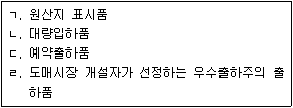
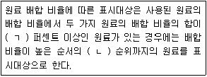
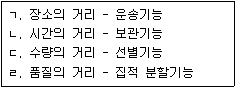
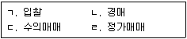
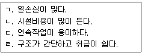
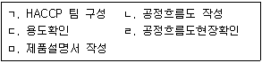
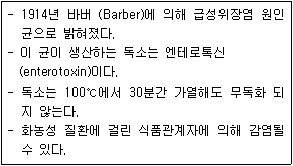
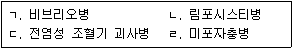
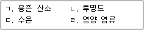
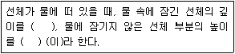

수산물품질관리사-1차 (2016-09-03 기출문제)
1과목: 수산물품질관리 관련법령
1. 농수산물 품질관리법령상 과태료 부과 대상에 해당하는 것은?
- 제한된 지정해역에서 수산물을 생산한 자
- 유전자변형농수산물을 판매하면서, 해당 농수산물에 유전자변형농수산물임을 표시하지 않은 자
- 품질인증품의 표시를 한 수산물에 품질인증품이 아닌 수산물을 혼합하여 판매할 목적으로 진열한 자
- 해양수산부장관이 정하여 고시한 수산가공품을 수출 상대국의 요청에 의해 검사한 경우, 그 결과에 대해 과대광고를 한 자
(정답률: 알수없음)

2. 농수산물 품질관리법령상 수산물 품질인증 취소사유에 해당하지 않는 것은?
- 의무표시 사항이 누락된 경우
- 품질인증 기준에 현저하게 맞지 아니한 경우
- 거짓이나 그 밖의 부정한 방법으로 인증을 받은 경우
- 폐업으로 품질인증품 생산이 어렵다고 판단되는 경우
(정답률: 알수없음)
3. 농수산물 품질관리법령상 해양수산부장관의 사전 승인을 받은 지리적표시권을 타인에게 이전 또는 승계할 수 있는 경우에 해당하는 것은?
- 법인 자격으로 등록한 지리적표시권자인 법인이 해산된 경우
- 법인 자격으로 등록한 지리적표시권자가 법인명을 개정하는 경우
- 개인 자격으로 등록한 지리적표시권자가 타인에게 매도하고자 하는 경우
- 개인 자격으로 등록한 지리적표시권자가 폐업하고자 하는 경우
(정답률: 알수없음)
4. 농수산물 품질관리법령상 수산물의 지리적표시 등록거절 사유의 세부기준에 해당하지 않는 것은?
- 해당 품목이 지리적표시 대상지역에서 생산된 수산물인 경우
- 해당 품목의 우수성이 국내나 국외에서 널리 알려지지 않은 경우
- 해당품목이 지리적표시 대상지역에서 생산된 역사가 깊지 않은 경우
- 해당 품목의 명성⋅품질이 본질적으로 특정지역의 생산환경적 요인이나 인적요인에 기인하지 않는 경우
(정답률: 알수없음)
5. 농수산물 품질관리법령상 우수표시품의 사후관리 등에 관한 설명으로 옳지 않은 것은?
- 우수표시품 조사시 긴급한 경우에는 조사의 일시, 목적 등을 조사대상자에게 알리지 않을 수 있다.
- 우수표시품 조사시 관계공무원은 그 권한을 표시하는 증표를 지니고, 이를 관계인에게 보여주어야 한다.
- 해양수산부장관은 우수표시품이 해당 인증기준에 미치지 못하는 경우 인증을 취소할 수 있다.
- 해양수산부장관은 우수표시품이 표시된 규격에 미치지 못하는 경우 표시정지의 조치를 할 수 있다.
(정답률: 알수없음)
6. 농수산물 품질관리법령상 유전자변형수산물의 표시대상품목을 고시하는 기관의 장은?
- 해양수산부장관
- 식품의약품안전처장
- 국립수산과학원장
- 국립수산물품질관리원장
(정답률: 알수없음)
7. 농수산물 품질관리법령상 수산물안전성조사에 관한 설명으로 옳지 않은 것은?
- 해양수산부장관은 어장 등에 대하여 안전성조사결과 생산단계 안전기준을 위반한 경우 해당 수산물의 폐기 등의 조치를 할 수 있다.
- 안전성조사를 위하여 관계공무원은 해당 수산물을 생산⋅저장하는 자의 관계 장부나 서류를 열람할 수 있다.
- 시⋅도지사 및 시장⋅군수⋅구청장은 관할 지역에서 생산⋅유통되는 수산물의 안전성확보를 위한 세부추진계획을 수립.시행하여야 한다.
- 시⋅도지사는 안전성조사를 위하여 필요한 경우 관계공무원에게 무상으로 시료수거를 하게 할 수 있다.
(정답률: 알수없음)
8. 농수산물 품질관리법령상 지정해역이 위생관리기준에 맞지 않을 경우 수산물 생산을 제한할 수 있는 경우에 해당하지 않는 것은?
- 선박의 충돌로 해양오염이 발생한 경우
- 지정해역이 일시적으로 위생관리기준에 적합하지 않게 된 경우
- 강우량의 변화로 지정해역의 오염이 우려되어 해양수산부장관이 수산물의 생산제한이 필요하다고 인정하는 경우
- 적조⋅냉수대 등의 영향으로 수산물 폐사가능성이 우려되는 경우
(정답률: 알수없음)
9. 농수산물 품질관리법령상 수산물품질관리사의 직무에 해당하지 않는 것은?
- 수산물의 등급판정
- 수산물 생산 및 수확 후 품질관리기술 지도
- 원산지 표시에 관한 지도⋅홍보
- 수산물의 출하 시기 조절, 품질관리기술에 관한 조언
(정답률: 알수없음)
10. 농수산물 품질관리법령상 농수산물품질관리심의회의 설치에 관한 설명으로 옳지 않은 것은?
- 심의회는 위원장 및 부위원장 각 1명을 포함한 60명 이내의 위원으로 구성한다.
- 위원장은 위원 중에서 호선하고 부위원장은 위원장이 위원 중에서 지명하는 사람으로 한다.
- 심의회에 지리적표시 등록심의 분과위원회를 둔다.
- 심의위원의 임기는 2년으로 한다.
(정답률: 알수없음)
11. 농수산물유통 및 가격안정에 관한 법령상 농수산물도매시장의 거래품목 중 수산부류에 해당하지 않는 것은?
- 조개류⋅갑각류
- 염장어류⋅염건어류
- 조수육류⋅난류
- 생선어류⋅건어류
(정답률: 알수없음)
12. 농수산물유통 및 가격안정에 관한 법령상 도매시장개설자가 시장도매인으로 하여금 우선적으로 판매하게 할 수 있는 것을 모두 고른 것은?

- ㄱ, ㄴ, ㄷ
- ㄱ, ㄴ, ㄹ
- ㄱ, ㄷ, ㄹ
- ㄴ, ㄷ, ㄹ
(정답률: 알수없음)
13. 농수산물유통 및 가격안정에 관한 법령상 농수산물공판장의 개설 등에 관한 설명으로 옳은 것은?
- 생산자단체와 공익법인이 공판장을 개설하려면 시⋅도지사의 허가를 받아야 한다.
- 공판장에는 중도매인, 매매참가인, 산지유통인 및 경매사를 둘 수 있다.
- 공판장의 중도매인은 공판장의 개설자가 허가한다.
- 공판장의 경매사는 공판장의 장이 임면한다.
(정답률: 알수없음)
14. 농수산물유통 및 가격안정에 관한 법령상 농림수협등 또는 공익법인의 산지판매제도의 확립을 위한 산지유통대책에 해당하는 것은?
- 선별⋅포장⋅저장 시설의 확충
- 생산조절 또는 유통조절 명령
- 가격예시 대상 품목 지정
- 산지유통인의 등록
(정답률: 알수없음)
15. 농수산물유통 및 가격안정에 관한 법령상 농림축산식품부장관 또는 해양수산부장관이 농수산물 소매유통의 개선을 위해 지원할 수 있는 사업이 아닌 것은?
- 농수산물의 생산자단체와 소비자단체간의 직거래사업
- 농수산물소매시설의 현대화 및 운영에 관한 사업
- 농수산물직판장의 설치 및 운영에 관한 사업
- 농수산물 민영도매시장의 설치 및 운영에 관한 사업
(정답률: 알수없음)
16. 농수산물유통 및 가격안정에 관한 법령상 주요 농수산물의 생산지역이나 생산수면(이하 "주산지"라 한다)의 지정 및 해제 등에 관한 설명으로 옳은 것은?
- 주산지의 지정은 읍⋅면⋅동 또는 시⋅군⋅구 단위로 한다.
- 시장⋅군수는 주산지를 지정하였을 때에는 이를 고시해야 한다.
- 주산지 지정의 변경 또는 해제를 할 때에는 농림축산식품부장관 또는 해양수산부장관의 승인을 받아야 한다.
- 주산지는 주요 농수산물의 재배면적 또는 양식면적이 농림축산식품부장관 또는 해양수산부장관이 고시하는 면적 이하로 지정한다.
(정답률: 알수없음)
17. 농수산물의 원산지 표시에 관한 법령상 살아있는 수산물의 원산지를 표시하지 않은 경우 과태료 부과기준은?
- 5만원 이상 1,000만원 이하
- 1차: 20만원, 2차: 40만원, 3차: 80만원
- 1차: 30만원, 2차: 60만원, 3차: 100만원
- 1차: 100만원, 2차: 300만원, 3차: 500만원
(정답률: 알수없음)
18. 농수산물의 원산지 표시에 관한 법률의 설명으로 옳지 않은 것은?
- 수출입 농수산물과 그 가공품의 원산지 표시는 「대외무역법」 에 따른다.
- 이 법은 농수산물 또는 그 가공품의 원산지 표시에 대하여 다른 법률에 우선하여 적용된다.
- 이 법에서 수산물에는 「소금산업진흥법」 에 따른 소금이 포함되지 않는다.
- 이 법에서 원산지란 농산물이나 수산물이 생산⋅채취⋅포획된 국가⋅지역이나 해역을 말한다.
(정답률: 알수없음)
19. 농수산물의 원산지 표시에 관한 법령상 수산물 원산지의 표시기준에 관한 설명으로 옳지 않은 것은?
- 양식수산물은 생산⋅채취⋅양식한 지역의 시⋅도명을 표시하여야 한다.
- 원양어업의 허가를 받은 어선이 해외 수역에서 어획하여 국내에 반입한 수산물은 원양산으로 표시한다.
- 국산 수산물로서 지역이 각각 다른 동일 품목을 혼합한 경우 혼합비율이 높은 순서로 3개 지역까지의 시⋅도명 또는 시⋅군⋅구명과 그 혼합비율을 표시한다.
- 동일 품목의 국산과 국산 외의 수산물을 혼합한 경우 혼합비율이 높은 3개 국가(지역, 해역 등)까지의 원산지와 그 혼합비율을 표시한다.
(정답률: 알수없음)
20. 농수산물의 원산지 표시에 관한 법령상 수산물이나 그 가공품을 조리하여 판매⋅제공하는 음식점에서의 수산물 원산지 표시대상품목으로만 짝지어진 것은?
- 참돔, 황태, 갈치, 고등어
- 넙치, 낙지, 뱀장어, 미꾸라지
- 갈치, 황태, 고등어, 뱀장어
- 넙치, 낙지, 북어, 조피볼락
(정답률: 알수없음)
21. 농수산물의 원산지 표시에 관한 법령상 수산물가공품에 관한 설명이다. ( )안에 들어 갈 내용이 옳게 연결된 것은?

- ㄱ: 95, ㄴ: 2
- ㄱ: 95, ㄴ: 3
- ㄱ: 98, ㄴ: 2
- ㄱ: 98, ㄴ: 3
(정답률: 알수없음)
22. 농수산물의 원산지 표시에 관한 법령상 농수산물 또는 그 가공품에 대한 원산지 표시사항 중 농수산물 품질관리법에 따라 원산지를 표시한 것으로 볼 수 없는 경우는?
- 품질인증품의 표시를 한경우
- 이력추적관리의 표시를 한경우
- 지리적표시를 한 경우
- 유전자변형수산물의 표시를 한 경우
(정답률: 알수없음)
23. 친환경농어업 육성 및 유기식품 등의 관리⋅지원에 관한 법령상 친환경농수산물에 해당하지 않는 것은?
- 무농약농산물
- 유기농수산물
- 무항생제수산물
- 활성처리제 사용 수산물
(정답률: 알수없음)
24. 친환경농어업 육성 및 유기식품 등의 관리⋅지원에 관한 법령상 유기식품 등의 인증에 관한 설명으로 옳지 않은 것은?
- 인증의 유효기간은 인증을 받은 날로부터 1년으로 한다.
- 인증사업자가 인증의 유효기간 내에 출하를 종료하지 아니한 인증품이 있는 경우 유효기간을 자동으로 1년 연장해준다.
- 인증사업자가 거짓으로 인증을 받은 경우에는 해당 인증기관이 그 인증을 취소하여야 한다.
- 인증 갱신을 하려는 자는 해당 인증을 한 국립수산물품질관리원장 또는 인증기관의 장에게 유효기간이 끝나는 날의 2개월 전까지 인증신청서를 제출하여야 한다.
(정답률: 알수없음)
25. 친환경농어업 육성 및 유기식품 등의 관리⋅지원에 관한 법령상 해양수산부장관이 인증심사원의 자격을 정지할 수 있는 사유에 해당하는 것은?
- 거짓으로 인증심사원의 자격을 부여받은 경우
- 부정한 방법으로 인증심사 업무를 수행한 경우
- 인증심사원증을 빌려 준 경우
- 중대한 과실로 인증기준에 맞지 아니한 유기식품을 인중한 경우
(정답률: 알수없음)
2과목: 수산물유통론
26. 수산물 공동판매에 관한 설명으로 옳은 것은?
- 공동선별이 공동계산보다 발달된 형태이다.
- 수산물 유통비용을 절감한다.
- 산지위판장을 통해서만 가능하다.
- 유통업자 간 판매시기와 장소를 조정하는 행위이다.
(정답률: 알수없음)
27. 수산업에서 태풍, 적조, 고수온 등의 자연현상으로 발생하는 물리적 위험을 회피하기 위한 수단은?
- 유통명령
- 현물거래
- 계약재배
- 재해보험
(정답률: 알수없음)
28. 수산물 경매제도의 장점이 아닌 것은?
- 거래의 투명성을 높일 수 있다.
- 거래의 안전성이 향상된다.
- 가격의 변동성을 줄일 수 있다.
- 거래의 공정성을 높일 수 있다.
(정답률: 알수없음)
29. 수산물 전자상거래에 관한 설명으로 옳은 것은?
- 영업시간과 진열공간의 제약이 있다.
- 상품의 표준규격화가 쉽다.
- 짧은 유통기간으로 인해 반품처리가 어렵다.
- 상품의 품질 확인이 쉽다.
(정답률: 알수없음)
30. 수산물 유통구조의 일반적 특징이 아닌 것은?
- 유통단계가 복잡하다.
- 영세한 출하자가 많다.
- 소량, 반복적으로 소비한다.
- 도매시장 중심으로 유통한다.
(정답률: 알수없음)
31. 수산물 공영도매시장에 관한 설명으로 옳지 않은 것은?
- 도매시장법인은 둘수 있으나, 시장도매인은 둘 수없다.
- 다수의 출하자와 구매자가 참여한다.
- 대금을 즉시 받을 수 있는 제도적 장치가 마련되어 있다.
- 수산물의 대량 거래가 가능하다.
(정답률: 알수없음)
32. 수산물 소매상에 관한 설명으로 옳지 않은 것은?
- 수집시장과 분산시장을 연결해 준다.
- 전통시장, 대형마트 등이 있다.
- 최종소비자에게 수산물을 판매하는 기능을 한다.
- 최종소비자의 기호변화 정보를 생산자 등에게 전달하는 기능을 한다.
(정답률: 알수없음)
33. B 영어조합법인의 '어린이용 생선가스'가 인기를 얻자 다수의 업체들이 유사상품을 출시하고, B 법인의 판매성장률이 둔화될 때의 제품수명주기상 단계는?
- 도입기
- 성장기
- 성숙기
- 쇠퇴기
(정답률: 알수없음)
34. 생물 꽃게 한 마리에 '3,990원'으로 표시하여 판매할 때의 가격전략은?
- 단수가격
- 명성가격
- 개수가격
- 단일가격
(정답률: 알수없음)
35. 수산물의 생산과 소비 간에 발생하는 거리와 이를 좁혀 주는 유통기능을 옳게 연결한 것은?

- ㄱ, ㄴ
- ㄱ, ㄹ
- ㄴ, ㄷ
- ㄷ, ㄹ
(정답률: 알수없음)
36. 소비자 가격이 30,000원이고 생산자 수취가격이 21,000원인 완도산 전복의 유통마진율(%)은?
- 30
- 35
- 40
- 50
(정답률: 알수없음)
37. 갈치 한 마리 가격이 5,000원에서 10,000원으로 상승할 때 소비량의 감소율(%)은? (단, 수요의 가격탄력성은 0.4라고 가정한다.)
- 20
- 30
- 40
- 50
(정답률: 알수없음)
38. 수산물 유통마진의 구성 요소가 아닌 것은?
- 감모비
- 생산자 이윤
- 수송비
- 점포임대료
(정답률: 알수없음)
39. 상품, 가격 등의 유통정보를 전달하는 매체는?
- RFID(Radio Frequency Identification)
- VAN(Value Added Network)
- EDI(Electronic Data Interchange)
- CRM(Customer Relationship Management)
(정답률: 알수없음)
40. 수산물 유통시장을 교란시키는 원인이 아닌 것은?
- 불법어획물의 판매 증가
- 원산지 표시 위반
- 중간 유통업체의 과도한 이윤
- 다양한 유통경로의 등장
(정답률: 알수없음)
41. 수산물 포장의 기능이 아닌 것은?
- 제품의 보호성
- 취급의 편리성
- 판매의 촉진성
- 재질의 고급화
(정답률: 알수없음)
42. 고등어 생산량의 80%이상이 부산공동어시장에 양륙된다. 이러한 지역성을 가지는 이유로 옳지 않은 것은?
- 일시 대량어획 수산물을 처리할 수 있는 큰 규모의 시장이다.
- 시장 주변에 냉동창고가 밀집되어 있어 보관이 용이하다.
- 의무(강제)상장제에 의해 지정된 양륙항이다.
- 대량거래가 가능한 중도매인이 존재한다.
(정답률: 알수없음)
43. 시장외 유통으로 거래되는 원양산 오징어의 가격결정방법으로 옳은 것을 모두 고른 것은?

- ㄱ, ㄴ
- ㄱ, ㄷ
- ㄱ, ㄴ, ㄷ
- ㄴ, ㄷ, ㄹ
(정답률: 알수없음)
44. 선어의 유통과정에 관한 설명으로 옳지 않은 것은?
- 산지위판장에서는 경매 전에 양륙과 배열을 한다.
- 산지 경매 이후에 재선별이나 재입상을 한다.
- 산지 입상과정에서 선어용은 스티로폼 상자, 냉동용은 골판지 상자에 입상된다.
- 소비지 도매시장에서 소매용으로 재선별한다.
(정답률: 알수없음)
45. 냉동 수산물의 상품적 기능으로 옳지 않은 것은?
- 수산물을 연중 소비할 수 있도록 한다.
- 보관을 통해 수산물의 품질을 높인다.
- 부패하기 쉬운 수산물의 보관⋅저장성을 높인다.
- 계절적 일시 다량 어획으로 인한 수산물의 가격 폭락을 완충해 준다.
(정답률: 알수없음)
46. 양식 굴의 유통에 관한 설명으로 옳은 것은?
- 국내 소비는 가공굴 위주이다.
- 국내 소비용 생굴(알굴)은 식품안전을 위해 가열하여 유통한다.
- 껍질 채로 유통되기도 한다.
- 수출은 생굴(알굴)이 많다.
(정답률: 알수없음)
47. 수산가공품의 유통이 가지는 특성이 아닌 것은?
- 부패 억제를 통해 장기 저장이 가능하다.
- 소비자의 다양한 기호를 만족시킬 수 있다.
- 공급을 조절할 수 있다.
- 저장성이 높을수록 일반 식품과 유통경로가 다르다.
(정답률: 알수없음)
48. 수산물 유통 정책의 목적과 수단이 옳게 연결된 것은?
- 유통효율 극대화 - 수산물 가격정보 공개
- 가격안정 - 정부비축
- 적정한 가격 수준 - 수산물 물류표준화
- 식품안전 - 물가의 감시
(정답률: 알수없음)
49. 민간협력형 수산물 가격 및 수급 안정정책이 아닌 것은?
- 수산업관측
- 유통협약
- 자조금
- 수산물유통시설 지원
(정답률: 알수없음)
50. 수산물의 식품안전성을 확보하기 위해 도입한 제도가 아닌 것은?
- 수산물 안전성 조사제도
- 식품안전관리인증기준(HACCP)제도
- 지리적표시제도
- 수산물이력제도
(정답률: 알수없음)
3과목: 수확후 품질관리론
51. 오징어나 문어를 가열하거나 선도가 저하되면 표피가 적갈색으로 변한다. 이 때 관여하는 색소는?
- 클로로필(chlorophyll)
- 카로테노이드(carotenoid)
- 옴모크롬(ommochrome)
- 헤모시아닌(hemocyanin)
(정답률: 알수없음)
52. 이매패의 폐각근에 주로 함유되어 있는 무척추 수산동물 특유의 단백질은?
- 액틴(actin)
- 미오신(myosin)
- 엘라스틴(elastin)
- 파라미오신(paramyosin)
(정답률: 알수없음)
53. 어패류의 엑스성분이 아닌 것은?
- 색소
- 유기산
- 베타인(betaine)
- 유리아미노산
(정답률: 알수없음)
54. 어류의 사후변화과정 중 사후경직 현상에 해당하지 않는 것은?
- ATP의 감소
- Creatine phosphate 의 감소
- TCA cycle 에 의한 유기산의 축적
- 액틴(actin)과 미오신(myosin)의 결합
(정답률: 알수없음)
55. 수산건제품 제조시 이용되는 동건법과 동결건조법의 건조 원리를 순서대로 올바르게 연결한 것은?
- 동결 및 융해 - 동결 및 승화
- 동결 및 증발 - 동결 및 해동
- 동결 및 증발 - 동결 및 승화
- 동결 및 융해 - 동결 및 가열
(정답률: 알수없음)
56. 상자형 열풍건조기와 비교하여 터널형 열풍건조기의 특징으로 옳은 것을 모두 고른 것은?

- ㄱ, ㄴ
- ㄴ, ㄷ
- ㄱ, ㄷ, ㄹ
- ㄴ, ㄷ, ㄹ
(정답률: 알수없음)
57. 수산물을 장기간 동결 저장할 때 나타나는 품질변화에 해당하지 않는 것은?
- 육의 보수력 증가
- 승화
- 색소의 변화
- 동결화상
(정답률: 알수없음)
58. 특정온도에서 저장한 냉동 고등어의 실용 저장기간(PSL)이 400일이라면 1일 품질저하율(%/일)은?
- 0.0025
- 0.25
- 0.004
- 0.4
(정답률: 알수없음)
59. 수분 함량이 80%인 어류를 -20°C에서 동결 저장할 때 어육의 동결율(%)은? (단, 어육의 빙결점은 -2°C이다.)
- 10
- 72
- 90
- 95
(정답률: 알수없음)
60. 염장법에 관한 설명으로 옳은 것은?
- 마른간법은 소금 사용량에 비해 소금의 침투가 느리다.
- 마른간법은 염장초기에 부패가 빠르다.
- 물간법은 제품의 짠맛을 조절할 수 없다.
- 물간법은 염장 중 공기와 접촉되지 않으므로 지방산화가 적다.
(정답률: 알수없음)
61. 장기저장이 가능한 냉훈품의 가공원리가 아닌 것은?
- 건조
- 환원
- 염지
- 항균성
(정답률: 알수없음)
62. 동남아시아에서 주로 생산되는 동결 연육의 주원료이며, 자연응고가 잘 일어나고 되풀림이 쉬운 어종은?
- 갈치
- 임연수어
- 고등어
- 실꼬리돔
(정답률: 알수없음)
63. 어묵의 주원료인 연육을 동결 저장할 때 단백질의 변성지표는?
- 솔비톨(sorbitol) 함량
- 표면색깔
- Ca-ATPase 활성
- 아미노산 조성
(정답률: 알수없음)
64. 수산물의 레토르트파우치용으로 적합한 식품 포장재는?
- 가공필름
- 폴리염화비닐
- 오블레이트
- 셀로판
(정답률: 알수없음)
65. 통조림 제조공정 중 탈기의 목적으로 옳지 않은 것은?
- 살균및냉각 중 관의 파손 방지
- 저장중관내면의 부식 억제
- 내용물의 색택과 향미의 변화 방지
- 보툴리누스균(Clostridium botulinum)의 사멸
(정답률: 알수없음)
66. 수산물을 MA(modified atmosphere) 포장하여 저장할 때 문제점으로 옳지 않은 것은?
- 고농도 이산화탄소에 의한 포장의 팽창
- 이산화탄소 용해에 의한 신맛의 생성
- 이산화탄소 내성 미생물에 의한 2차 발효
- pH 변화에 의한 보수성의 감소
(정답률: 알수없음)
67. 염장품과 젓갈 가공원리의 차이점은?
- 식염 첨가량
- 육질분해
- 사용 원료
- 염장방법
(정답률: 알수없음)
68. 한천은 원료와 제조 방법에 따라 자연한천과 공업한천으로 구분한다. 공업한천의 원료와 탈수법의 연결이 옳은 것은?
- 개우무 - 동결탈수법
- 우뭇가사리 - 동건법
- 꼬시래기 - 압착탈수법
- 진두발 - 동건법
(정답률: 알수없음)
69. 식품안전관리인증기준(HACCP)의 선행요건이 아닌 것은?
- 청소 및 살균
- 기구 및 설비 검사
- 작업환경 관리
- 위해 허용한도 설정
(정답률: 알수없음)
70. 식품안전관리인증기준(HACCP)의 7원칙에 해당하지 않는 것은?
- 위해요소분석
- 모니터링 체계 확립
- 품질관리 기준 설정
- 중요관리점 결정
(정답률: 알수없음)
71. 식품안전관리인증기준(HACCP)의 준비단계 절차를 순서대로 올바르게 나열한 것은?

- ㄱ - ㄴ - ㄷ - ㅁ - ㄹ
- ㄱ - ㄴ - ㄹ - ㄷ - ㅁ
- ㄱ - ㅁ - ㄴ - ㄹ - ㄷ
- ㄱ - ㅁ - ㄷ - ㄴ - ㄹ
(정답률: 알수없음)
72. 복어독에 관한 설명으로 옳지 않은 것은?
- 식품공전상 국내 식용가능 복어 종류는 21종이다.
- 사람의 최소치사량은 20,000MU이다.
- 중독 증상은 섭취 후 30분~4시간 사이에 나타난다.
- 복어독의 강도는 청산가리(NaCN)의 약1,250배이다.
(정답률: 알수없음)
73. 패혈증 비브리오균에 관한 설명으로 옳지 않은 것은?
- 식염농도 5~7% 배지에서 잘 번식한다.
- 원인균은 비브리오 불니피쿠스 (Vibrio vulnificus)이다.
- 잠복기는 20시간 정도이다.
- 어패류를 날 것으로 먹을 때에 감염될 수 있다.
(정답률: 알수없음)
74. 다음이 설명하는 독소형 식중독균은?

- 살모넬라균(Salmonella)
- 포도상구균(Staphylococcus aureus)
- 바실루스 세레우스균(Bacillus cereus)
- 프로테우스 모르가니균(Proteus morganii)
(정답률: 알수없음)
75. 매물고등류를 섭취한 후 배멀미 증상을 동반하는 식중독 원인물질은?
- 삭시톡신(saxitoxin)
- 시구아톡신(ciguatoxin)
- 테트라민(tetramine)
- 도모산(domoic acid)
(정답률: 알수없음)
4과목: 수산일반
76. 염분농도(salinity) 변화에 관하여 가장 민감한 협염성 양식 대상 종은?
- 참돔
- 송어
- 바지락
- 굴
(정답률: 알수없음)
77. 우리나라에서 무지개송어(Oncorhynchus mykiss)의 양식에 관한 설명으로 옳은 것은?
- 현재완전양식이 가능한 어종이다.
- 암수 구별이 형태적으로 불가능하다.
- 산란기는 일반적으로 5~7월이다.
- 양식 최적 수온은 2~6°C이다.
(정답률: 알수없음)
78. 다음에서 바이러스 감염에 의해 발생하는 어류의 질병으로 옳은 것만을 고른 것은?

- ㄱ, ㄴ
- ㄱ, ㄹ
- ㄴ, ㄷ
- ㄷ, ㄹ
(정답률: 알수없음)
79. 어류의 장기 중에서 면역 기관이 아닌 것은?
- 간
- 비장
- 생식소
- 신장
(정답률: 알수없음)
80. 우리나라 양식대상해조류 중 1년생인 것은?
- 톳
- 다시마
- 우뭇가사리
- 미역
(정답률: 알수없음)
81. 우리나라에서 양식되는 전복에 관한 설명으로 옳지 않은 것은?
- 양식산 전복의 주생산지는 전라남도이다.
- 참전복은 난류계이고, 말전복은 한류계이다.
- 1~2cm 전후의 치패를 채롱이나 바구니 등에 넣어 중간육성을 시작한다.
- 양식방법에는 해상 가두리식, 육상 수조식 등이 있다.
(정답률: 알수없음)
82. 2010년 이후 우리나라 정부 수산통계에서 연간 생산량이 많은 어업을 순서대로 나열한 것은?
- 천해양식어업 ＞ 연근해어업 ＞ 원양어업 ＞ 내수면어업
- 연근해어업 ＞ 천해양식어업 ＞ 원양어업 ＞ 내수면어업
- 천해양식어업 ＞ 원양어업 ＞ 연근해어업 ＞ 내수면어업
- 연근해어업 ＞ 원양어업 ＞ 천해양식어업 ＞ 내수면어업
(정답률: 알수없음)
83. 다음에서 양식장의 화학적 환경 요인을 모두 고른 것은?

- ㄱ, ㄴ
- ㄱ, ㄹ
- ㄴ, ㄷ
- ㄴ, ㄹ
(정답률: 알수없음)
84. 어미의 몸 속에서 알을 부화시킨 후에 새끼를 출산하는 양식 대상 어류는?
- 넙치(광어)
- 참돔
- 농어
- 조피볼락(우럭)
(정답률: 알수없음)
85. 최근 3년(2013~2015)간 금액 기준으로 우리나라 최대의 수산물 수입⋅수출 상대국은? (단, 순서는 수입 - 수출이다.)
- 중국 - 러시아
- 중국 - 일본
- 일본 - 중국
- 미국 - 일본
(정답률: 알수없음)
86. 양식에 있어서 인공 종묘의 먹이생물에 관한 설명으로 옳지 않은 것은?
- 클로렐라(Chlorella)는 동물성 먹이생물 배양에 이용된다.
- 로티퍼(rotifer)는 어류 자어 성장을 위한 먹이생물로 이용된다.
- 알테미아(Artermia)는 어류 자어 및 패류 유생 모두의 먹이생물로 이용된다.
- 케토세로스(Chaetoceros)는 패류 유생의 먹이생물로 이용된다.
(정답률: 알수없음)
87. 1990년대 이후 우리나라 수산업의 대내외 환경과 특징에 관한 설명으로 옳지 않은 것은?
- 수산정책을 전담하는 수산청의 창설로 수산업에 대한 투자 효율이 높아졌다.
- 세계무역기구(WTO) 체제의 출범 이후 수산물 시장 개방이 확대되었다.
- 주변국과의 어업협정에 따라 근해어업의 조업지가 줄어들었다.
- 유엔해양법 발효와 이에 따른 배타적경제수역(EEZ) 체제의 강화로 원양어장을 확보하는데 어려움이 가중되었다.
(정답률: 알수없음)
88. 양식에 관한 설명으로 옳지 않은 것은?
- 양식에서는 대상 생물이 요구하는 영양을 갖춘 적정한 먹이 공급이 중요하다.
- 수산동물을 양식하는 방법은 지수식, 유수식, 순환여과식 등이 있다.
- 산란기의 어미 보호나 바다에 수정란을 방류하는 것도 양식의 범주에 포함된다.
- 양식은 이용 가치가 높은 수산생물을 일정한 구역이나 시설에서 기르고 번식시킨다는 의미이다.
(정답률: 알수없음)
89. 수산생물 중 고래류의 연령형질로 타당한 것은?
- 비늘
- 이석
- 지느러미 연조
- 이빨 및 수염
(정답률: 알수없음)
90. 다음 문장에서 ( )에 들어갈 단어를 순서대로 나열한 것은?

- 홀수 - 건현
- 건현 - 트림
- 트림 - 용골
- 홀수 - 용골
(정답률: 알수없음)
91. 우리나라에서 사용하는 그물코의 크기를 표시하는 방법이 아닌 것은?
- 일정한 길이 안의 매듭의 수나 발의 수
- 일정한 길이 안의 매듭의 평균 길이
- 일정한 폭 안의 씨줄의 수
- 그물코의 뻗친 길이
(정답률: 알수없음)
92. 일반적으로 어로활동을 진행하는 순서로 옳은 것은?
- 집어 → 어군탐색 → 어획
- 어군탐색 → 집어 → 어획
- 어군탐색 → 어획 → 집어
- 어획 → 집어 → 어군탐색
(정답률: 알수없음)
93. 지속가능한 연근해 수산자원의 이용을 위한 수단이 아닌 것은?
- 연근해 어업구조 조정
- 자율관리어업 확대
- 총허용어획량(TAC) 제도 확대
- 생사료 공급 확대
(정답률: 알수없음)
94. 수산업법에서 어업을 관리하기 위한 어업의 분류가 아닌 것은?
- 허가어업
- 면허어업
- 원양어업
- 신고어업
(정답률: 알수없음)
95. 2016년 기준으로 우리나라 총허용어획량(TAC) 제도의 대상 종이 아닌 것은?
- 갈치
- 전갱이
- 개조개
- 고등어
(정답률: 알수없음)
96. 수산업법상 수산업에 포함되는 활동이 아닌 것은?
- 수산동식물을 인공적으로 길러서 생산하는 활동
- 소비자에게 원활한 수산물을 공급하기 위한 유통 활동
- 자연에 있는 수산동식물을 포획⋅채취하는 생산 활동
- 생산된 수산물을 원료로 활용하여 다른 제품을 제조하거나 가공하는 활동
(정답률: 알수없음)
97. 수산업과 어촌이 나아갈 방향과 수산업과 어촌의 지속가능 발전을 도모하는 것을 목적으로 제정된 법은?
- 수산업법
- 수산자원관리법
- 어촌어항법
- 수산업⋅어촌 발전 기본법
(정답률: 알수없음)
98. 우리나라 수산업의 중요성에 관한 설명으로 옳지 않은 것은?
- 동물성 단백질의 중요한 공급원이다.
- 해외수산자원 확보에 중요한 역할을 한다.
- 국가의 기간산업으로 국민에게 식량을 공급한다.
- 에너지 산업에서 중요한 위치를 차지하고 있다.
(정답률: 알수없음)
99. 수산자원 및 수산물의 특성에 관한 내용으로 옳은 것은?
- 재생성 자원이 아니다.
- 부패와 변질이 어렵다.
- 표준화와 등급화가 쉽다.
- 수요와 공급이 비탄력적이다.
(정답률: 알수없음)
100. 면허어업에 관한 설명으로 옳지 않은 것은?
- 어업면허의 유효기간은 10년이며, 연장이 가능하다.
- 면허어업은 반드시 면허를 받아야 영위할 수 있는 어업이다.
- 해조류양식어업의 면허처분권자는 해양수산부장관이다.
- 면허어업은 일정기간 동안 그 수면을 독점하여 배타적으로 이용하도록 권한을 부여한다.
(정답률: 알수없음)